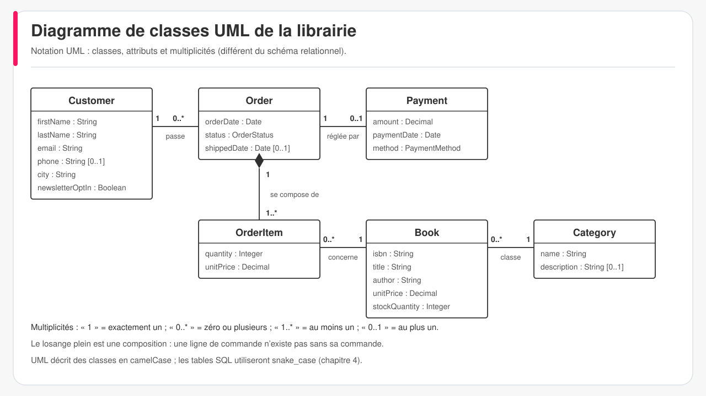
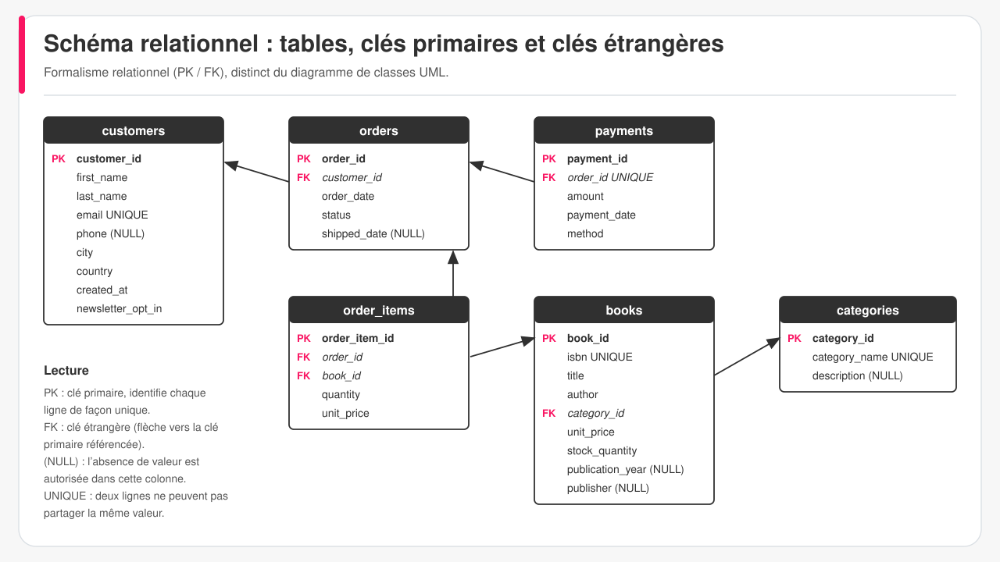

Du besoin métier au modèle
Avant d’écrire la moindre instruction CREATE TABLE, on modélise : on décide quelles informations conserver et comment elles se relient. Mal modélisée, une base devient vite incohérente ; bien modélisée, les requêtes deviennent naturelles.
Le besoin de la librairie, en français : « Nous vendons des livres rangés par catégorie. Des clients passent des commandes. Chaque commande contient une ou plusieurs lignes, chacune pour un livre et une quantité. Une commande peut être réglée par un paiement. »
Étape 1 : repérer les entités
Une entité est une chose dont on veut mémoriser des informations. On les trouve souvent en cherchant les noms de la description : client, livre, catégorie, commande, ligne de commande, paiement. Six entités, donc six tables.
Étape 2 : déterminer les attributs
Un attribut est une caractéristique d’une entité. Pour chaque entité, on se demande : quelles informations devons-nous réellement conserver ? Exemple pour un livre : ISBN, titre, auteur, prix, stock, année de publication, éditeur.
Étape 3 : identifier les relations
Une relation (ou association) relie deux entités ; on lui attache des multiplicités : un client passe 0 à N commandes, une commande appartient à 1 client, etc.
Le diagramme de classes UML
UML (Unified Modeling Language) est un langage graphique de modélisation. Son diagramme de classes représente chaque entité par un rectangle : nom en haut, attributs en dessous. Les traits entre rectangles sont les relations, annotées de multiplicités.

À lire sur le schéma :
Customer 1 — 0..* Order: un client passe zéro, une ou plusieurs commandes ; une commande a un seul client.Order 1 — 0..1 Payment: une commande est réglée par au plus un paiement.Order ◆— 1..* OrderItem: le losange plein est une composition : une ligne n’existe pas sans sa commande.Book 1 — 0..* OrderItem: un livre peut apparaître dans de nombreuses lignes.Category 1 — 0..* Book: une catégorie regroupe zéro, un ou plusieurs livres.
Transformer le modèle en tables
| Règle | Application dans la librairie |
|---|---|
| Chaque classe devient une table ; chaque attribut devient une colonne | 6 tables : customers, categories, books, orders, order_items, payments |
| Chaque table reçoit une clé primaire | customer_id, category_id, book_id, order_id, order_item_id, payment_id |
| Relation 1 – N : la FK va côté N | orders.customer_id, books.category_id, order_items.order_id, order_items.book_id |
| Relation 1 – 0..1 : FK + contrainte UNIQUE | payments.order_id UNIQUE : au plus un paiement par commande |
Les noms passent en snake_case anglais |
firstName → first_name, unitPrice → unit_price |

Les flèches vont de la clé étrangère vers la clé primaire qu’elle référence. Comparez avec le diagramme UML : ici apparaissent des colonnes techniques (customer_id, order_id…) qui n’existaient pas comme attributs métier.
Hypothèses métier retenues
Ces règles sont fixées une fois pour toutes ; toutes les requêtes du cours s’y conforment.
| Sujet | Règle |
|---|---|
| Prix et montants | Montants exacts à deux décimales (NUMERIC(8,2) / DECIMAL) |
| Prix dans une ligne | order_items.unit_price mémorise le prix au moment de la commande : si le catalogue change, l’historique reste exact |
| Quantité | Toujours strictement positive (CHECK (quantity > 0)) |
| Paiement | Une commande a 0 ou 1 paiement ; le montant égale le total des lignes |
| Statuts de commande | pending, paid, shipped, cancelled ; seules les commandes paid et shipped ont un paiement |
| Suppressions | Impossible de supprimer un client ou un livre référencé (RESTRICT) ; supprimer une commande supprime ses lignes (CASCADE) |
La normalisation, sans excès de théorie
La normalisation est une méthode pour éviter la répétition et les incohérences vues au chapitre 1. On l’applique par « formes normales ».
1re forme normale (1NF) : une seule valeur par cellule. Une colonne categories contenant "Roman, Policier" pour un même livre viole la 1NF : on ne pourrait ni compter proprement ni filtrer. Solution : une table séparée et une relation.
2e forme normale (2NF) : tout dépend de la clé entière. Si order_items stockait le titre du livre, ce titre dépendrait seulement de book_id (une partie de la clé order_id + book_id), pas de la ligne entière. Solution : garder le titre dans books uniquement.
3e forme normale (3NF) : pas de dépendance cachée entre colonnes non clés. Exemple : dans customers, country dépend de city (Bruxelles → Belgique). Une 3NF stricte demanderait une table cities. Nous gardons volontairement country dans customers pour ne pas alourdir un cours d’initiation : c’est un compromis assumé, à connaître.
Exercice guidé : lire des multiplicités
Que signifie « Order 1 — 0..1 Payment » ? Une commande peut-elle avoir deux paiements ? Peut-il exister un paiement sans commande ?
Afficher la correction détaillée
Côté Payment, la multiplicité 0..1 signifie « au plus un » : une commande a zéro ou un paiement, jamais deux. Côté Order, la multiplicité 1 signifie qu’un paiement est lié à exactement une commande : un paiement sans commande n’existe pas. Dans les tables, cela se traduit par payments.order_id NOT NULL UNIQUE (une FK obligatoire et unique).
Exercice autonome : ajouter une entité
La librairie veut gérer des avis : un client peut laisser plusieurs avis, un livre peut en recevoir plusieurs, et un client ne note un livre qu’une fois. Proposez la table reviews, ses clés et sa contrainte d’unicité.
Afficher la correction détaillée
Table reviews : review_id (PK), customer_id (FK vers customers), book_id (FK vers books), rating, comment. Les deux relations sont de type 1 – N, donc les deux FK se placent dans reviews. Pour imposer « un avis par client et par livre », on ajoute UNIQUE (customer_id, book_id). On pourrait ajouter CHECK (rating BETWEEN 1 AND 5) pour valider la note.
Remarque : reviews est une table d’association entre customers et books (relation N – N résolue par une table intermédiaire), exactement comme order_items relie orders et books.
Valider · question 1
Voir la justification de chaque réponse
- Incorrect — Du côté « un » : Elle devrait alors contenir plusieurs valeurs, ce qui est impossible dans une cellule.
- Bonne réponse — Du côté « plusieurs » : Chaque ligne du côté « plusieurs » stocke l’identifiant de son unique parent.
- Incorrect — Dans une troisième table obligatoire : Une table intermédiaire n’est nécessaire que pour les relations plusieurs-à-plusieurs.
Valider · question 2
Voir la justification de chaque réponse
- Incorrect — Parce que SQL l’impose : SQL n’impose rien de tel.
- Bonne réponse — Parce qu’il mémorise le prix au moment de la commande, qui peut différer du prix actuel : Les deux colonnes portent deux informations distinctes.
- Incorrect — Parce que books n’a pas de colonne prix : Elle existe : books.unit_price.